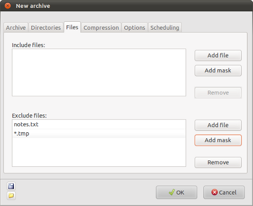

| Prev | Home | Next |
The "Files" tab of the "New archive" window allows you to enter filters to decide which files will be included in the archive.

If you want to archive all the files in the directories that you have selected then you will not need to enter anything on this page. If, however, you want to ignore some files then you can use this page to exclude those that you do not want to be included in the archive.
Include files - this option is used to select
files which should be included in the backup. If any filenames or file
masks are entered here then only files which match them will be
included in the backup archive. Use the "Add file" button to select
files which should be included and the "Add mask" button to enter file
masks.
For example, if you add a file named 'information.txt', then all files
of that name in any of the selected directories will be saved.
Similarily, if you add the filemask *.htm* then all files with the
suffix .htm or .html will be included in the archive.
The Remove button can be used to remove unwanted filenames or masks from the list.
Exclude files - Use this option to exclude
files that would otherwise be included in the backup. Files can be
excluded either by name or using a mask. If any filenames or file masks
are entered here then any files which match them will not be included
in the backup archive, even if they match filenames or masks in the
"Include files" section. Use the "Add file" button to select files
which should be included and the "Add mask" button to enter file masks.
The "Remove" button can be used to remove unwanted filenames or masks from the list.
| Prev | Home | Next |
| Directory settings | Up | Archive compression |